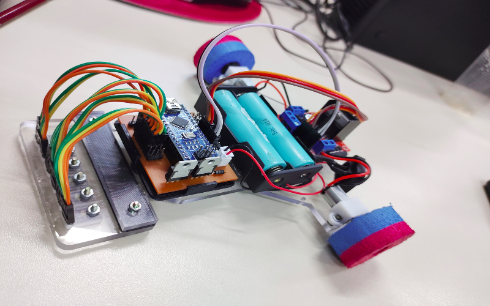

Simulação de um seguidor de linha
Projeto pronto desenvolvido no Thinkercad
| PLACA ARDUINO NANO V3.0 |
|---|
| É uma ótima plataforma para criação de projetos eletrônicos de pequena escala e fácil porte pelo seu tamanho, além de que sua programação pode ser feita em C ou C++ através da IDE da própria organização ARDUINO e a transferência de dados entre máquina e hardware pode ser feita via cabo mini-USB. O equipamento possui, 14 pinos para entrada e saída, 8 entradas analógicas, 1 porta serial de hardware, um oscilador de cristal de 16 MHz, uma conexão mini-USB, uma entrada de alimentação, uma conexão ICSP e um botão de reset. |
| SEGUIDOR DE LINHA |
| Um robô seguidor de linha é uma categoria de robôs que são constituídos geralmente por 2 mais motores, 2 ou mais sensores, um driver Ponte H L293N, pilhas, um par de rodas e um botão de liga/desliga, isso tudo será controlado por um Arduino, o coração do robô, por meio de uma programação lógica. Sua função basicamente consiste em completar um circuito sobre uma linha conseguindo realizar curvas sem sair dela, tudo isso no menor tempo possível, este tipo de robô é muito utilizado em competições de robótica. |
Nesta terceira e última etapa do processo, os integrantes do grupo realizaram uma pesquisa acerca da implementação do mecanismo de controle em loop (comumente conhecido como PID) ao código do seguidor de linha. Resumidamente, o controlador PID nada mais é que um algoritmo cuja fórmula contém três coeficientes básicos chamados de proporcional, integral e derivativa; onde tais valores são termos de controle que influenciarão de forma distinta em como o robô seguirá a linha. Tendo concluído o desenvolvimento do código, testes práticos foram realizados em sala de aula para um melhor ajuste de performance do robô no trajeto estabelecido; ao mesmo tempo em que informações pertinentes a todo o processo supracitado foram agregadas ao site desenvolvido e utilizado desde o início do projeto de aprendizagem colaborativa.
/*As definições dos pinos abaixo irão setar o controle de ativação ou
desativação de suas respectivas portas no arduino para controlar o
sentido do motor (horário ou anti-horário).*/
#define PININ1 2
#define PININ2 4
#define PININ3 5
#define PININ4 7
/*As definições abaixo dizem respeito ao controle do PWM dos motor
setados em sua portas(3 e 6, respectivamente)
*/
#define PINENA 3
#define PINENB 6
/*Definições das portas analógicas referente ao uso de sensores para
controle da potência dos motores*/
#define S1 A0
#define S2 A1
#define S3 A2
#define S4 A3
#define S5 A4
#define S6 A5
/* Valores de ajustes para o seguidor de linha com o uso de MEF
(máquina de estados finita)*/
#define TRESHOLD 600 // Valor de referencia para cor da linha branca
#define SPEED0 255 // Valor de 0 a 255 para velocidade com a seguinte leitura do sensor (0 0 1 1 0 0)
#define SPEED1 210 // Valor de 0 a 255 para velocidade com a seguinte leitura do sensor (0 0 1 1 1 0)
#define SPEED2 170 // Valor de 0 a 255 para velocidade com a seguinte leitura do sensor (0 0 0 1 0 0)
#define SPEED3 160 // Valor de 0 a 255 para velocidade com a seguinte leitura do sensor (0 0 0 1 1 0)
#define SPEED4 90 // Valor de 0 a 255 para velocidade com a seguinte leitura do sensor (0 0 0 1 1 1)
#define SPEED5 50 // Valor de 0 a 255 para velocidade com a seguinte leitura do sensor (0 0 0 0 1 0)
#define SPEED6 0 // Valor de 0 a 255 para velocidade com a seguinte leitura do sensor (0 0 0 0 1 1)
#define SPEED7 150 // Valor de 0 a 255 para velocidade com a seguinte leitura do sensor (0 0 0 0 0 1)
#define RUNTIME 19000 // Valor para executar o trajeto (tempo em que o seguidor de linha ficará na pista)
void setup() {
Serial.begin(9600);
}
void loop() {
/* Valores do motor da esquerda. Recebe três parâmetros: 1 char e dois ints ('4'; 255 e 255 respectivamente); onde '4' diz respeito a coordenadas do sentido de locomoção do robô e 255 refere-se à velocidade do mesmo.*/
motorOption('4',255,255);
// Motor da direita.
motorOption('6', 255, 255);
followLineMEF();/* Chamada de função para execução do seguidor de linha.*/
}
void motorControl(int speedLeft, int speedRight) {
/* Função para controle do driver de motor, onde "speedLeft" e "speedRight" são os valores de velocidade das suas respectivas direções. Ambos valores positivos: motor desloca o robô para frente; Ambos valores negativos: motor desloca o robô para trás;Um valor negativo e outro positivo: motor desloca o robô para esquerda ou direita.*/
// Definições das portas digitais.
pinMode(PININ1, OUTPUT);
pinMode(PININ2, OUTPUT);
pinMode(PININ3, OUTPUT);
pinMode(PININ4, OUTPUT);
pinMode(PINENA, OUTPUT);
pinMode(PINENB, OUTPUT);
// Ajustes do motor esquerdo.
if (speedLeft < 0) { /*Verifica se o valor é negativo, e se o for será invertido o seu valor como variável e dado novas instruções de direção para o motor.*/
speedLeft = -speedLeft;
digitalWrite(PININ3, HIGH);
digitalWrite(PININ4, LOW);
} else { /*O contrário do cenário visto acima, aplica-se as instruções abaixo.*/
digitalWrite(PININ3, LOW); /*Escrita analógica que envia instruções para o robô.*/
digitalWrite(PININ4, HIGH);
}
// Ajustes do motor direito.
if (speedRight < 0) {
speedRight = -speedRight;
digitalWrite(PININ1, LOW);
digitalWrite(PININ2, HIGH);
} else {
digitalWrite(PININ1, HIGH);
digitalWrite(PININ2, LOW);
}
analogWrite(PINENA, speedLeft);
analogWrite(PINENB, speedRight);
}
void motorOption(char option, int speedLeft, int speedRight) {
/* Função para controle de motor com pré-definições puxadas da função motorControl*/
switch (option) {
case '6': /* Esquerda; onde, caso o robô esteja convergindo para a esquerda e saindo da linha, o mesmo deverá ajeitar-se para a direita.*/
motorControl(-speedLeft, speedRight);
break;
case '4': /* Direita. Mesma lógica vista acima aplica-se neste caso.*/
motorControl(speedLeft, -speedRight);
break;
case '2': // Retrocede o robô.
motorControl(-speedLeft, -speedRight);
break;
case '8': // Avança o robô.
motorControl(speedLeft, speedRight);
break;
case '0': // Para o robô.
motorControl(0, 0);
break;
}
}
bool motorStop(long runtime, long currentTime) {
// Função de parada do robô em um determinado tempo de execução
if (millis()/*tempo de execução do arduino*/ >= (runtime/*tempo de percurso desejado*/ + currentTime/*tempo atual de execução no percurso*/)) {
/*Estrutura condicional acima é usada para comparar a soma do tempo de execução do robô com o tempo de atuação do arduino.*/
motorOption('0', 0, 0);
while (true) {
}
return false;
}
return true; /*Enquanto a comparação acima determinar que o valor da soma for menor que o valor de milis, a condição será dada como verdadeira*/
}
void readSensors(void) {
/* Função para leitura dos sensores e impressão dos valores na serial do arduino.*/
Serial.print(analogRead(S1));
Serial.print(' ');
Serial.print(analogRead(S2));
Serial.print(' ');
Serial.print(analogRead(S3));
Serial.print(' ');
Serial.print(analogRead(S4));
Serial.print(' ');
Serial.print(analogRead(S5));
Serial.print(' ');
Serial.println(analogRead(S6));
Serial.print(' ');
}
void followLineMEF(void) {
/* Função para controle do seguidor de linha em modo de maquina de estado finita.*/
bool flag = true;
long currentTime = millis();
while (flag) {
/* Flag para verificação do tempo de parada dentro do loop,
que fará com que o processo continue enqunto a condição for
verdadeira*/
flag = motorStop(RUNTIME, currentTime);
/*Estrutura condicional abaixo totalmente encadeada*/
//leitura do sensor (1 1 1 1 1 1)
if (analogRead(A0) <= TRESHOLD && analogRead(A1) <= TRESHOLD && analogRead(A2) <= TRESHOLD && analogRead(A3) <= TRESHOLD && analogRead(A4) <= TRESHOLD && analogRead(A5) <= TRESHOLD) {
motorOption('8', SPEED0, SPEED0);
// leitura do sensor (0 1 1 1 1 0)
} else if (analogRead(A0) >= TRESHOLD && analogRead(A1) <= TRESHOLD && analogRead(A2) <= TRESHOLD && analogRead(A3) <= TRESHOLD && analogRead(A4) <= TRESHOLD && analogRead(A5) >= TRESHOLD) {
motorOption('8', SPEED0, SPEED0);
// leitura do sensor (0 0 1 1 0 0)
} else if ( analogRead(A0) >= TRESHOLD && analogRead(A1) >= TRESHOLD && analogRead(A2) <= TRESHOLD && analogRead(A3) <= TRESHOLD && analogRead(A4) >= TRESHOLD && analogRead(A5) >= TRESHOLD) {
motorOption('8', SPEED0, SPEED0);
// leitura do sensor (0 1 1 1 0 0)
} else if (analogRead(A0) >= TRESHOLD && analogRead(A1) <= TRESHOLD && analogRead(A2) <= TRESHOLD && analogRead(A3) <= TRESHOLD && analogRead(A4) >= TRESHOLD && analogRead(A5) >= TRESHOLD) {
motorOption('8', SPEED0, SPEED1);
// leitura do sensor (0 0 1 1 1 0)
} else if (analogRead(A0) >= TRESHOLD && analogRead(A1) >= TRESHOLD && analogRead(A2) <= TRESHOLD && analogRead(A3) <= TRESHOLD && analogRead(A4) <= TRESHOLD && analogRead(A5) >= TRESHOLD ) {
motorOption('8', SPEED1, SPEED0);
// leitura do sensor (0 0 1 0 0 0)
} else if (analogRead(A0) >= TRESHOLD && analogRead(A1) >= TRESHOLD && analogRead(A2) <= TRESHOLD && analogRead(A3) >= TRESHOLD && analogRead(A4) >= TRESHOLD && analogRead(A5) >= TRESHOLD) {
motorOption('8', SPEED0, SPEED2);
// leitura do sensor (0 0 0 1 0 0)
} else if (analogRead(A0) >= TRESHOLD && analogRead(A1) >= TRESHOLD && analogRead(A2) >= TRESHOLD && analogRead(A3) <= TRESHOLD && analogRead(A4) >= TRESHOLD && analogRead(A5) >= TRESHOLD ) {
motorOption('8', SPEED2, SPEED0);
// leitura do sensor (0 1 1 0 0 0)
} else if (analogRead(A0) >= TRESHOLD && analogRead(A1) <= TRESHOLD && analogRead(A2) <= TRESHOLD && analogRead(A3) >= TRESHOLD && analogRead(A4) >= TRESHOLD && analogRead(A5) >= TRESHOLD) {
motorOption('8', SPEED0, SPEED3);
// leitura do sensor (0 0 0 1 1 0)
} else if (analogRead(A0) >= TRESHOLD && analogRead(A1) >= TRESHOLD && analogRead(A2) >= TRESHOLD && analogRead(A3) <= TRESHOLD && analogRead(A4) <= TRESHOLD && analogRead(A5) >= TRESHOLD) {
motorOption('8', SPEED3, SPEED0);
// leitura do sensor (1 1 1 0 0 0)
} else if (analogRead(A0) <= TRESHOLD && analogRead(A1) <= TRESHOLD && analogRead(A2) <= TRESHOLD && analogRead(A3) >= TRESHOLD && analogRead(A4) >= TRESHOLD && analogRead(A5) >= TRESHOLD) {
motorOption('8', SPEED0, SPEED4);
// leitura do sensor (0 0 0 1 1 1)
} else if (analogRead(A0) >= TRESHOLD && analogRead(A1) >= TRESHOLD && analogRead(A2) >= TRESHOLD && analogRead(A3) <= TRESHOLD && analogRead(A4) <= TRESHOLD && analogRead(A5) <= TRESHOLD) {
motorOption('8', SPEED4, SPEED0);
// leitura do sensor (0 1 0 0 0 0)
} else if (analogRead(A0) >= TRESHOLD && analogRead(A1) <= TRESHOLD && analogRead(A2) >= TRESHOLD && analogRead(A3) >= TRESHOLD && analogRead(A4) >= TRESHOLD && analogRead(A5) >= TRESHOLD) {
motorOption('8', SPEED0, SPEED5);
// leitura do sensor (0 0 0 0 1 0)
} else if (analogRead(A0) >= TRESHOLD && analogRead(A1) >= TRESHOLD && analogRead(A2) >= TRESHOLD && analogRead(A3) >= TRESHOLD && analogRead(A4) <= TRESHOLD && analogRead(A5) >= TRESHOLD) {
motorOption('8', SPEED5, SPEED0);
// leitura do sensor (1 1 0 0 0 0)
} else if (analogRead(A0) <= TRESHOLD && analogRead(A1) <= TRESHOLD && analogRead(A2) >= TRESHOLD && analogRead(A3) >= TRESHOLD && analogRead(A4) >= TRESHOLD && analogRead(A5) >= TRESHOLD) {
motorOption('8', SPEED0, SPEED6);
// leitura do sensor (0 0 0 0 1 1)
} else if (analogRead(A0) >= TRESHOLD && analogRead(A1) >= TRESHOLD && analogRead(A2) >= TRESHOLD && analogRead(A3) >= TRESHOLD && analogRead(A4) <= TRESHOLD && analogRead(A5) <= TRESHOLD) {
motorOption('8', SPEED6, SPEED0);
// leitura do sensor (1 0 0 0 0 0)
} else if (analogRead(A0) <= TRESHOLD && analogRead(A1) >= TRESHOLD && analogRead(A2) >= TRESHOLD && analogRead(A3) >= TRESHOLD && analogRead(A4) >= TRESHOLD && analogRead(A5) >= TRESHOLD) {
motorOption('6', SPEED7, SPEED7);/*Neste cenário, o robô
está prestes a sair totalmente da pista pelo sentido da
esquerda. A linha de códigos acima fará com que o mesmo
venha a convergir para a direita.*/
// leitura do sensor (0 0 0 0 0 1)
} else if (analogRead(A0) >= TRESHOLD && analogRead(A1) >= TRESHOLD && analogRead(A2) >= TRESHOLD && analogRead(A3) >= TRESHOLD && analogRead(A4) >= TRESHOLD && analogRead(A5) <= TRESHOLD) {
motorOption('4', SPEED7, SPEED7);/*Mesma lógica vista acima
aplica-se a esta condição.*/
}
}
motorOption('0', 0, 0); //Desliga os motores.
}